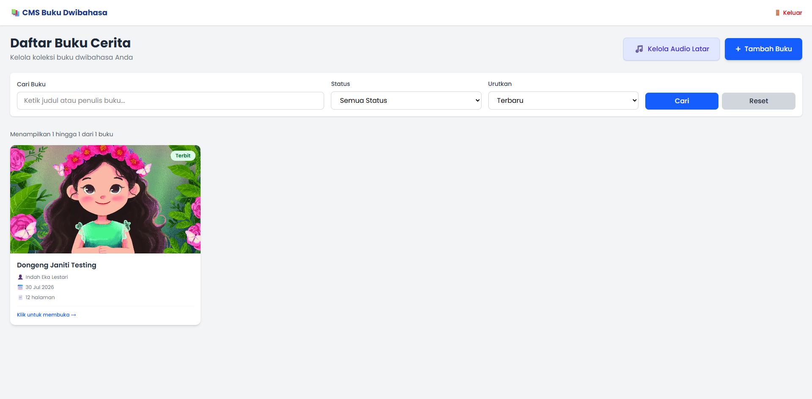
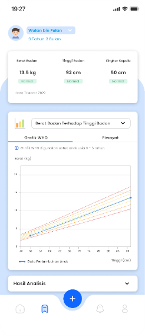
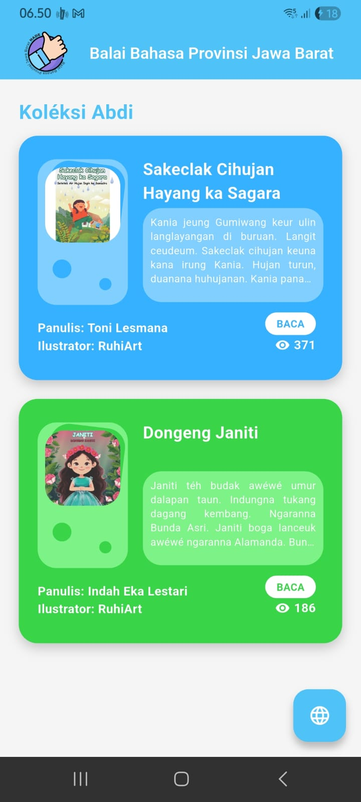
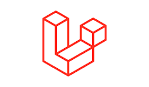
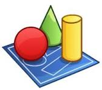
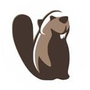
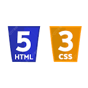
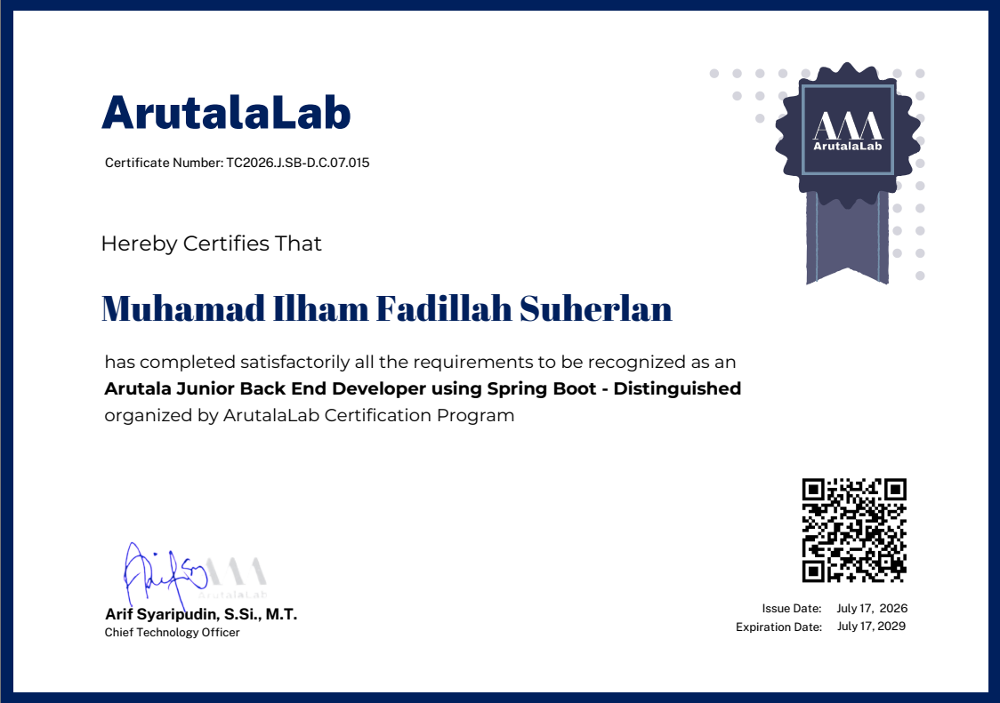
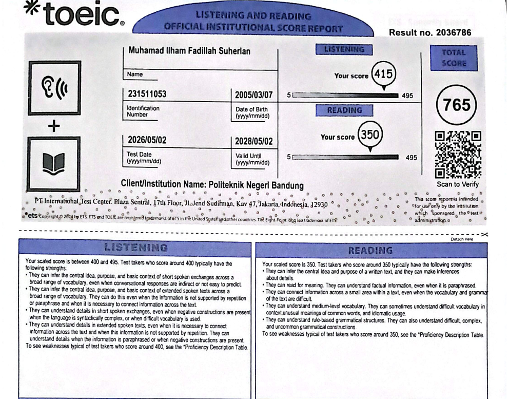
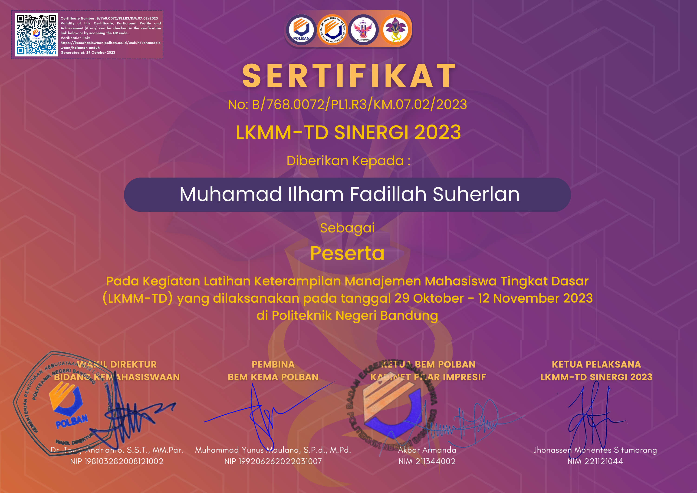

Content Management System (CMS) Kado Ceria
Platform pengelolaan buku flipbook interaktif untuk Aplikasi Mobile Kado Ceria.
Know MoreHalo, saya
Software Engineer
Membangun sistem dan aplikasi yang rapi, terukur, dan menyelesaikan masalah pengguna secara nyata, mulai dari analisis kebutuhan hingga deployment aplikasi.
Software Engineer dengan pengalaman membangun sebuah aplikasi berbasis website dan mobile dari tahapan analisis requirement hingga pengujian aplikasi. Tertarik pada bidang System Analyst dan Back End Developer.
Beberapa proyek yang pernah saya kerjakan, dari aplikasi mobile hingga sistem pengamanan data.

Platform pengelolaan buku flipbook interaktif untuk Aplikasi Mobile Kado Ceria.
Know More
Aplikasi yang dirancang untuk membantu orang tua memantau dan mengelola kebutuhan gizi harian anak dengan menyediakan informasi kondisi gizi anak dan memberikan rekomendasi makanan sesuai dengan kondisi anak.
Know More
Aplikasi buku audio interaktif cerita anak dwibahasa (Sunda-Indonesia) terbitan Balai Bahasa Provinsi Jawa Barat.
Know More





Berlaku: Jul 2026 – Jul 2029

Berlaku: Mei 2026 – Mei 2028

Berlaku: Lifetime